Hi I'm Armaan and I'm 9 years old.
Some of you might already know me from my first blog post about building The Gamey Game v1. But I am back with v2 and this is it's blog.
You should also check out Gamey Game v2 because this blog will be more interesting if you've actually seen what I’m talking about. If you would like to see the actual code behind it, here are links to the CSS and JS files.
By the way, you can follow my coding journey here.
A year ago, I got into coding when I learned how to leverage AI to teach me about new code like setTimeout() and <button>. I made a game (The Gamey Game). It was a very basic game with a lot of bugs. But personally, I think the concept is nice. It is a math battle game where you answer math questions to attack and kill bosses. I made the game using HTML, CSS and JS (Javascript).
At this point if you have not seen The Gamey Game v1 or its blog, you should check it out before you continue.
After the game v1 was released, my dad posted it on both Reddit and Hacker News. I got a lot of feedback from both. I also got feedback from Uncle Trevor, who actually teaches high school computer science. The feedback contained bugs, improvements and more. I also liked the feeling of knowing so many people were playing my game! It feels nice to know people enjoy something you built with a lot of hard work! Also, the comments were not mean or anything, they were actually pretty nice!
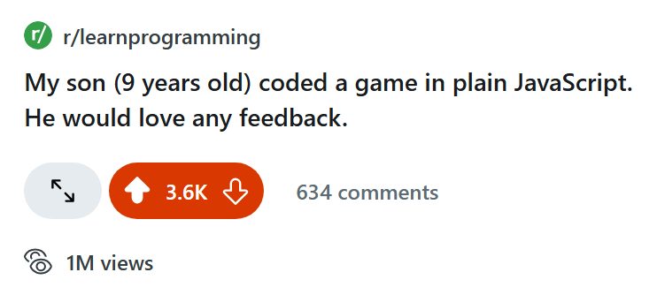 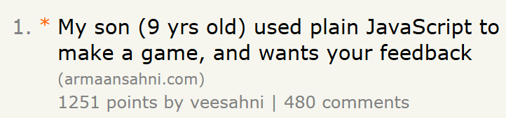Dad's Comments: The most valuable benefit of the feedback was motivation to keep moving forward. A big thank you to everybody who left feedback!
Me and my dad took the feedback from Reddit and Hacker News, and together we organized it all on a Trello board. It took 5 days to sort out all the feedback and we even worked on it while we were grocery shopping!
Dad's Comments: He's not kidding here - it was a lot of work!
Trello is an app which helps you organize projects with columns, and cards that go in those columns. You can mark the cards done and give them labels that you can customize. You can also give cards due dates and checklists. You may want to check out Trello yourself.
Personally, I use Trello by using the columns to sort everything by area like bugs, things that are just cool, things that other people requested and more! In those columns, each of the cards would be a different thing I need to change. I even had a column for cards that I had already completed. Because, it is nice looking at everything you've completed next to everything you have not completed, and seeing how you completed more than you have not completed.
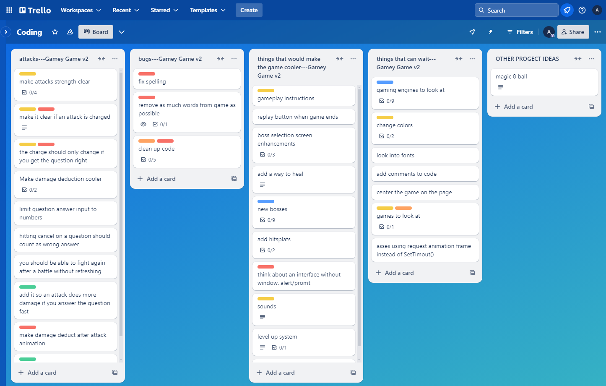For the Gamey Game v2 I wanted to add some elements like hitsplats, health bars and backgrounds. Me and my dad discussed what I was going to add for a while. Then I worked on mockups. A mockup is a quick non-detailed blueprint for what you are going to do, with only the essentials.
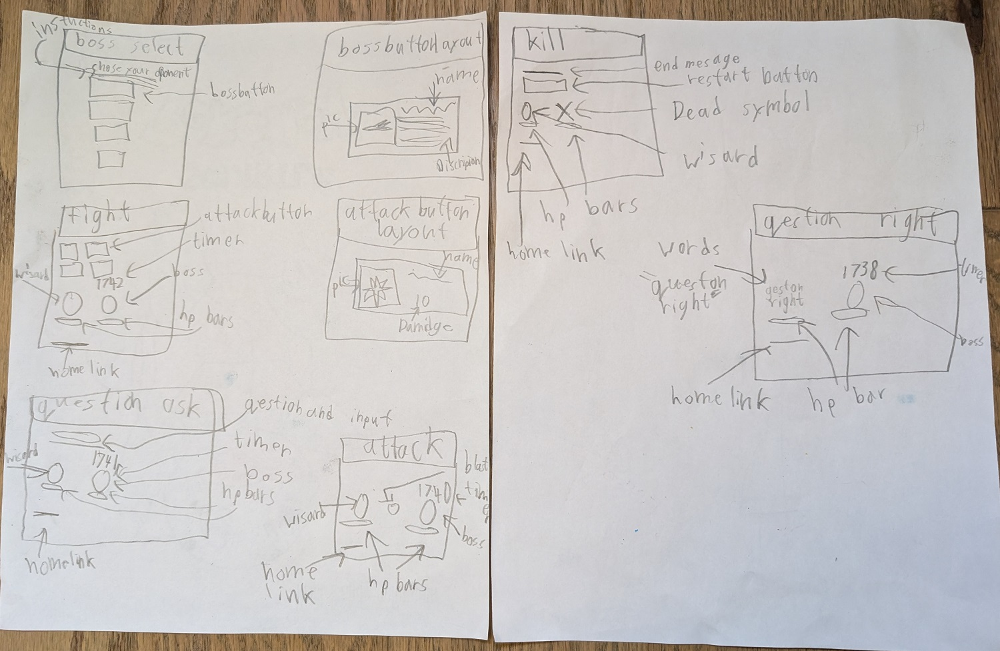Design is step one for the plan of an object. At the start, you make your design. Your design will contain what it should look like, what it should be made out of, what it should do, and what it is going to be. You put it all together and then you get a plan for what you want to build. Then you make it.
Dad's Comments: We had a lot of discussion around the concept of design throughout the whole process. I'm trying to show him that typing the code is only a tiny part of building software.
Bad design usually never makes it to the manufacturing step. Usually, it is stopped before it reaches there and is sent back to be redesigned better. But sometimes it does make it through. One example is a Norman door. A Norman door is a door with a bad design. If you look in your house you will probably find a couple of Norman doors. Some Norman doors, for example, have a handle that could be pulled, when you're supposed to push. This makes you think that you're supposed to pull and so you pull… and the door doesn't open! They are called Norman doors because a person wrote a book about them and his last name is Norman.
Dad's Comments: I was reading "The Design of Everyday Things" around the same time, which led to interesting discussions about Norman doors. It stuck with him!
In computer programming, there are mainly two kinds of design: visual design and user experience design. Visual design is… well, it says it in the name. Visual design is the visual: colors, space between objects, images, etc. User experience design is not visual. Instead, it focuses on the experience of the user. User experience design for building a game is: what is the gameplay, is it interesting, does it work on both a phone or computer, does the user know what they're supposed to do, how many options do they have, etc.
The Gamey Game v1/v2 are made in HTML, JavaScript and CSS. I did not change the languages I used for v1. HTML for the base, CSS for the color/style, and JavaScript for making things happen.
My coding platform is VScode. My dad gave it to me so I could try coding. If you would like to try coding in real world languages, you should try VScode. In VScode I have the Prettier plugin. Prettier is a formatting helper that will help with the formating, adding semicolons at the end of each line, removing unnecessary spaces, removing unnecessary lines, etc.
I also separated my CSS, JavaScript and HTML into three different files. Originally they were all one file using <script> and <style> tags.
In the Gamey Game v2, I still used Google Gemini, but a lot less. My original usage was to learn what browser features existed. But now, I know most of the necessary features so I did not need to use it a lot.
Something interesting is: when most people use AI, they open a new chat every time they open the tab. Instead, I always have one long chat for each subject. I have one chat for game production, one chat for image generation, one chat for spelling help, one chat for minecraft, etc. I do this so I don't have to keep introducing it to my game and what I am doing. It already knows the languages I'm using and probably knows much more about the game than you do. So this way my AI is able to help me more than it would if I had thousands of chats. You may want to try this at home. Gemini is pretty okay (it is not amazing) for coding. If you need AI, you might want to use Gemini.
Dad's Comments: I want to stress that every tool he uses is free. For anybody considering to learn to code, the real cost is just your time.
The Gamey Game v1 was actually a turn-based game. But everyone thought that it was a live action game because the turn order was not actually enforced and you could attack on the opponent's turn. So what happened was they attacked on the opponent's turn and the opponent would hit them as they were attacking and then they would think “oh it's a live-action game”.
Actually, there was an indication of the turn order! A blue circle was displayed on the character whose turn it was. But this was not clear enough.
Because everyone was playing it like a live action game, I realized that it would actually be cooler if it was a live-action game. So now Gamey Game v2 is actually a live action game with the boss attacking on a timer instead of a turn order.
Dad's Comments: This is the most significant change for v2.
In the Gamey Game v1, I had a lot of window.prompt/alert and it was very annoying because it popped up and you could not see what was happening behind it. I also received a lot of feedback to remove them. So I replaced them with an <input> box which would show and hide as needed.
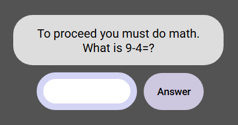As I mentioned in the Gamey Game v1 blog in the “Next For The Gamey Game” section I wanted to add backgrounds so it actually looks like the characters were somewhere. My dad suggested a small background just around the characters but I said: “No, if I do that it will look very boring. I need to put it around the entire page so it looks like they were actually in that place”.
I made mockups for the background. How it would fit, what would happen if they zoomed out, etc.
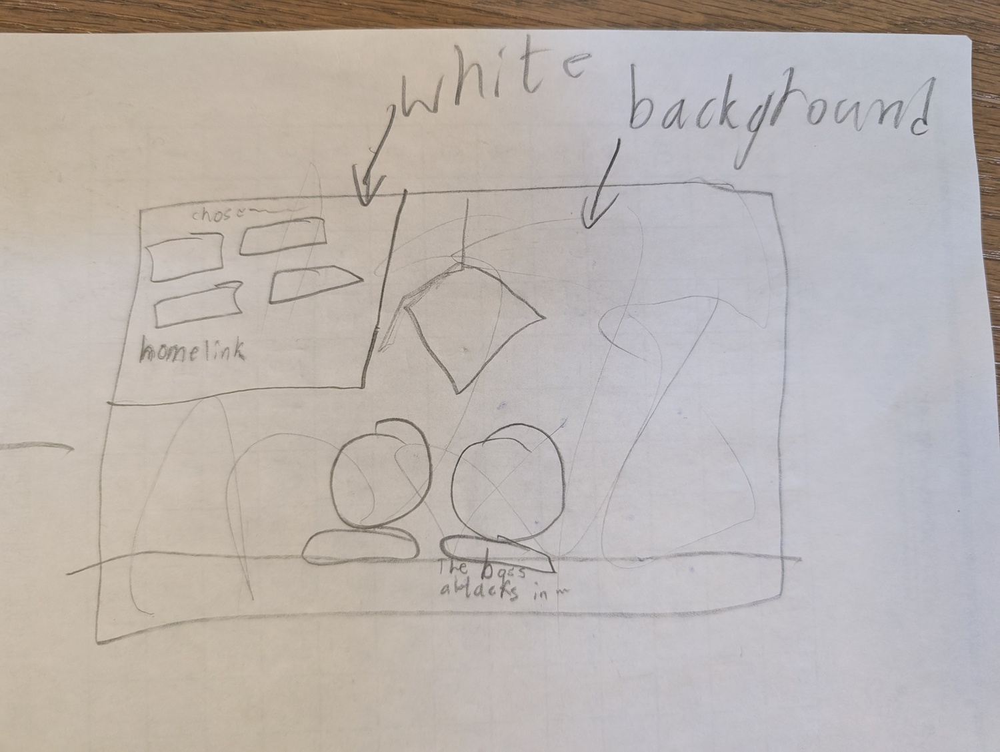 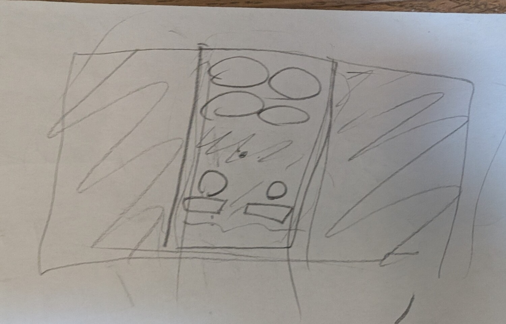I made the backgrounds using Piskel just like in the Gamey Game v1 where I used Piskel for all images. Piskel is an app where you can make pixel images with layers and frames. Piskel has an export size where you determine how many pixels by how many pixels your exported image will be. I exported my background images as 2100 pixels by 1200 pixels. If you want pixel drawings, I recommend Piskel.
When I was coloring buttons and backgrounds in v1, the colors were harsh and I got many complaints. In v2, I took account of this and contrast levels are now much more mellow.
V1 colors:
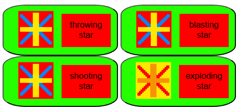V2 colors:
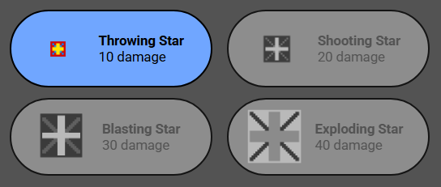Dad's Comments: His eyes don't feel the pain of the original colors. So parental feedback was necessary to understand what was reasonable.
All of your attacks need to charge up before they can be used. Stronger attacks require more charging before they can be used. When you use an attack, it loses some charge. When you get a question right, the attacks will gain charge.
A huge problem in v1 was that you did not know if an attack was charged up until it was clicked. v2 fixes this by visually disabling attacks that are not charged up.
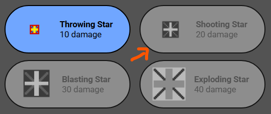There was another bug where you could repeatedly click an uncharged attack to charge it up even though it showed an error (“not charged up”).
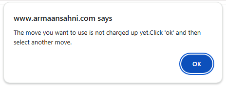In the Gamey Game v2 I really wanted to add sound.
I could not take sound files off the internet because it would be copyrighted so I decided to create my own sound. A copyright means that you cannot use something that someone else created without their permission.
I added sound for the background music, the boss attacks, your attacks, getting hit and more.
I used an app called Audacity. Audacity is an app that allows you to record your own sound files and export them. You may want to try Audacity.
I wanted to make HP bars.
My challenge was that the HP number had to go down one by one and the HP bar had to go down smoothly all at once.
I ended up having the HP number go down one by one using many setTimeout() calls in a way that would change the speed so it would finish in two seconds.
For the HP bar, I used a two second CSS transition.
Because they both finished at the same time, it appeared that they were in sync.
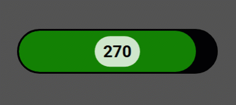I found a bug where the HP bar would spill out of the wall of the bar when the HP value was low. I use “overflow: hidden” to stop this from happening. With “overflow: hidden” on a DOM element, if its child gets bigger than the element, the overflowed portion will be hidden.
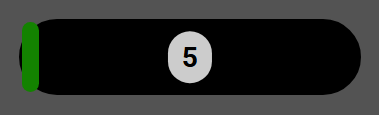I wanted to make it clear when a hit is happening and how much damage is being delivered. So I added hitsplats. Hitsplats are numbers that show up in most battle games when someone takes damage. They appear on top of the character showing how much damage the character is taking. The Gamey Game v1 did not have them and the Gamey Game v2 does.
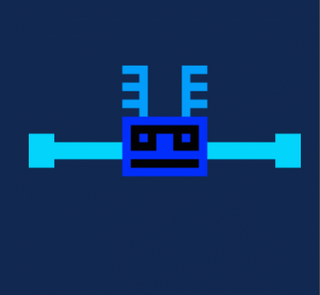There were some other small changes I added:
Dad's Comments: I also raised the bar for what was acceptable. Code should be readable. Variables should be reasonably named and should follow consistent naming conventions (thank you Uncle Trevor for important feedback that fed into this).
While making the game I learned a lot.
Number one, I learned design, both visual design and user experience design.
Number two, I learned how to use Trello to organize my tasks.
Number three, I learned how to debug. I used console.log() to find the problem. It allowed me to see where the code was going wrong. The hard part in debugging is finding the problem, not fixing it. Sometimes you think you’ve found the problem but you really have not.
I enjoyed building The Gamey Game v2 as well as The Gamey Game v1. If you still haven't done so yet, please check out The Gamey Game v2. I soon may be back with something else, but for now bye-bye 🙋♂️.
If you would like to follow me explore the world of coding, then join the journey!